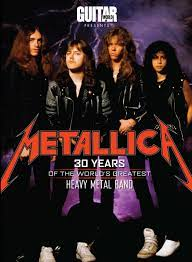
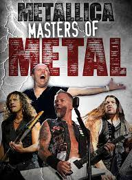
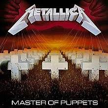
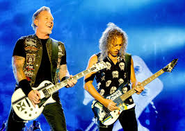
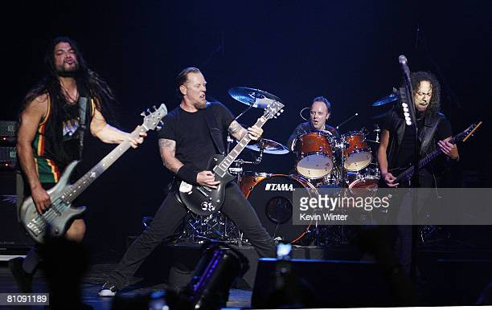

1.Metallica was formed in October 1981 in Los Angeles, California in the United States.
2. The band formed after James Hetfield responded to an advert that drummer Lars Ulrich had placed in his local newspaper. Lars was looking for people to jam with.
3. To date Metallica have played more than 1,700 shows in 60 countries. That list of countries includes South Africa.
4. To date the band have released 10 studio albums, 4 live albums, 5 EPs, 37 music videos & 39 singles.
5. Their first studio album, Kill’em All, was released in 1983.
6. In April 2000, the band filed a lawsuit against Napster for distributing pirated music online. Eventually, Napster shut down.
7. Metallica have been nominated for 23 Grammy Awards and won 9 Grammy Awards over the years. To date they’ve also won 5 Billboard Music Awards, 2 American Music Awards, 2 Classic Rock Awards, 7 Kerrang(!) Awards, 2 MTV Video Music Awards and 1 NME Award.
8. Drummer Lars Ulrich is officially the world’s richest metal drummer. The lucrative title comes partly as a result of the sales of Metallica’s first three albums, which netted him more than $12 million. Ulrich’s net worth is currently around $300 million.
9. Six consecutive Metallica albums have made their debut at number one on the Billboard Hot 200.
10. Metallica set a Guinness World Record for becoming the first musical act to perform on every continent. The band headed to Antartica in 2013 to perform at Carlini Base. Metallica and Coca-Cola organized a competition for fans to win tickets, where the fans also received a weeklong Antartica cruise.
11. Metallica (released in 1991 and commonly referred to as “the Black album”) is probably the most successful and popular album released by the band. To date the album has sold 16 million copies in the United States and more than 22 million copies worldwide. To date the band have sold more than 125 million records worldwide.
12. The band’s third LP, Master of Puppets, was their first gold album. It ultimately sold 6 million copies. Master of Puppets was also their first LP released through a major record label, Elektra Records.
13. The current members of the band are James Hetfield, Lars Ulrich, Kirk Hammett and Robert Trujillo.
14. Former members of Metallica include Ron McGovney, Dave Mustaine (who left the band and started Megadeth in 1983), Cliff Burton and Jason Newsted (who left the band in 2001).
15. Jason Newsted left Metallica in 2001, stating that the band was more focused on fighting Napster than making music. Newsted also said the he needed time away to heal from neck and back injuries he sustained from headbanging over the years.
16. My favorite song by Metallica, “Whiskey In The Jar”, was not originally written by them. The song was an original Irish folk song and it was first recorded in 1951 by Seamus Ennis (from Ireland).The 2nd most popular version of the song was recorded by Irish rock band Thin Lizzy in 1972.
17. Metallica met with tragic misfortune in 1986 when their bassist, Cliff Burton, died in a tour bus accident. Burton was thrown out of the bus’s window when the vehicle began to careen from side to side. The bus then landed on Burton, and an attempt to save him with a crane only led to the bus crashing onto him again. The bus driver said he hit a patch of black ice, but frontman James Hetfield said he walked up and down the street afterward and didn’t encounter any. Hetfield speculates the driver might have been drunk or asleep at the wheel, but a subsequent investigation cleared the driver of any wrongdoing.
18. The band’s second album Ride the Lightning is known for its blue cover. However, a French press misprint led to about 400 green copies, which have now become collector’s items.
19. Metallica‘s shortest song is “Motorbreath,” clocking in at 3:08. The longest song is “Suicide and Redemption” at 9:57.
Well, there you have it, 19 facts you might not have known about Metallica. I hope you’ve learned something today that you didn’t know before.
For The Official Website Of Metallica Click HERE